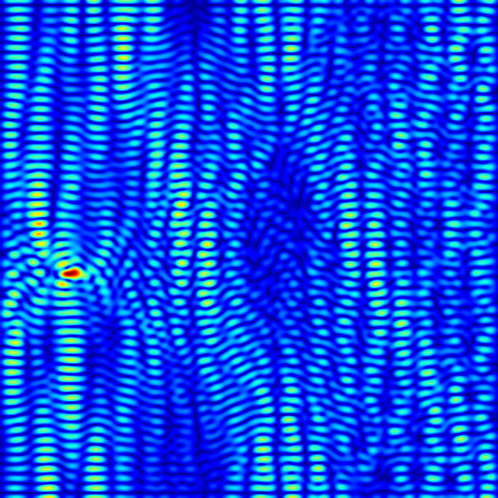
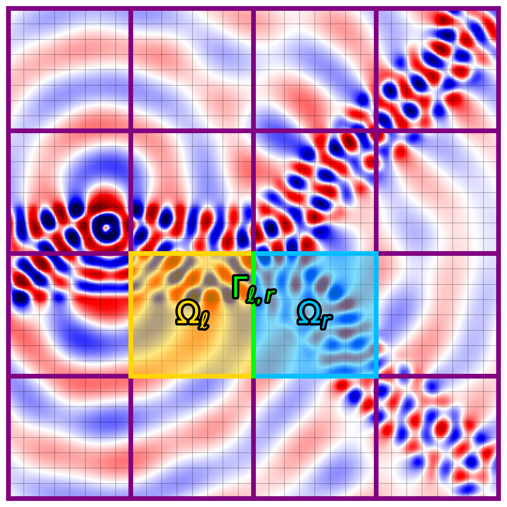
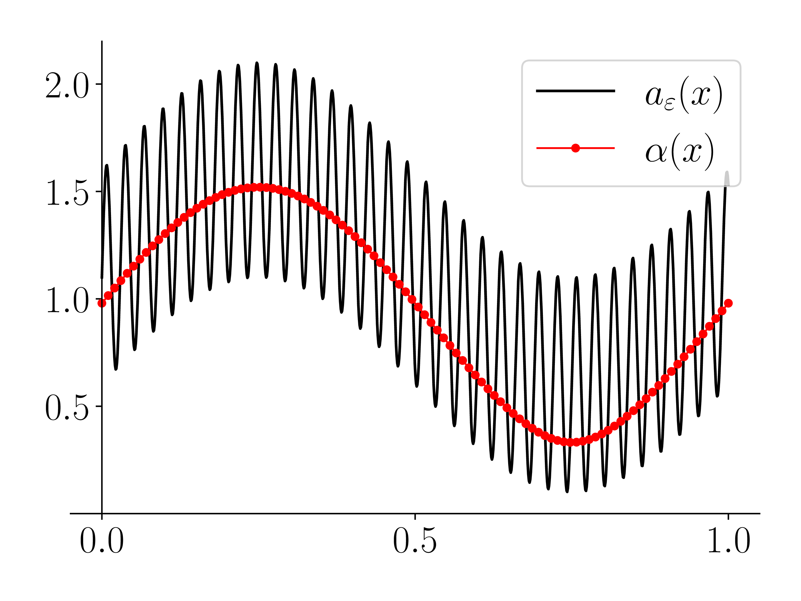
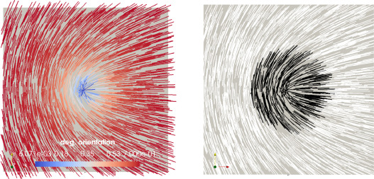
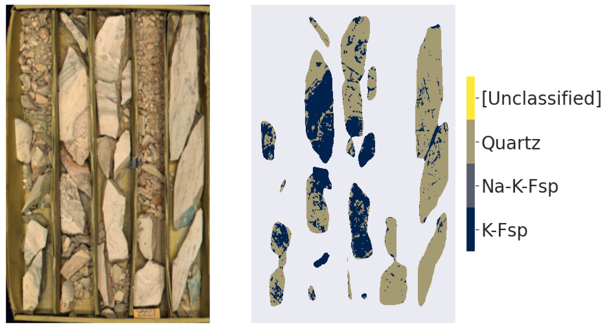

Ph.D. Student · Virginia Tech, Dept. of Mathematics
Numerical methods for partial differential equations and high-performance computing. Building scalable solvers for wave propagation and beyond.
About
I am a Ph.D. student in the Department of Mathematics at Virginia Tech, advised by Daniel Appelö. My research focuses on numerical methods for partial differential equations (PDEs) with an emphasis on high-performance computing (HPC). My work lies at the intersection of algorithmic theory and scalable implementation. A central focus of my research is the development of the WaveHoltz method for solving frequency-domain wave propagation problems. This includes a general theory establishing convergence in the semi-discrete and fully discrete settings, alongside the design of computational strategies that are efficient on modern parallel architectures.
I earned both my B.S. and M.S. in Applied Mathematics and Statistics from the Colorado School of Mines. During that time, I worked on a project using machine learning to enhance the value of hyperspectral data in geosciences, bridging lab-based and field data collection techniques. As a graduate student, I have contributed to the MFEM finite element library, where I implemented a matrix-free interior penalty DG diffusion operator optimized for multi-GPU computing. In addition to my research at Virginia Tech, I collaborate with researchers at Lawrence Livermore National Laboratory on the GenDiL (Generic Discretization Library) project, which focuses on flexible, high-performance implementations of finite element methods in arbitrary dimensions.
Outside of research, I enjoy running, hiking, and traveling—not just to conferences. I’m an avid reader of fantasy novels and a fan of horror movies.
01 / Research
Finite element and finite difference methods, the WaveHoltz iteration for frequency-domain wave propagation, and domain decomposition methods.
GPU and many-core distributed algorithms and implementations in C++. Matrix-free methods optimized for modern massively parallel hardware.
02 / Publications

Journal of Computational Physics
Solving the Helmholtz equation with iterative methods is challenging because of its indefinite nature and highly oscillatory solutions. The WaveHoltz algorithm mitigates the difficulties of solving the Helmholtz equation by repeatedly solving the wave equation over short periods in time. In this paper, we prove that for stable semi-discretizations of the wave equation, the WaveHoltz iteration converges to an approximate solution of the corresponding frequency-domain problem, provided one exists. We present numerical examples in one and two dimensions using finite difference and discontinuous Galerkin discretizations illustrating these convergence results.

The Helmholtz equation governs wave propagation in acoustics, electromagnetics, and seismology, but its indefinite nature makes it difficult to solve with iterative methods. Domain decomposition methods are a natural fit for massively parallel architectures, yet mapping efficient Helmholtz solvers onto modern GPUs remains a challenge. We address both with two key contributions: (1) a block-level domain decomposition scheme, in which each subdomain is assigned to a single thread block and all solves run concurrently in a single kernel launch, and (2) WaveHoltz as the subdomain solver. WaveHoltz is a fixed-point iteration that is uniquely well-suited to the GPU execution model due to its minimal memory footprint and no reduction operations. Together, these eliminate device-level synchronizations and replace global memory traffic with shared memory and register-level operations, keeping subdomain data largely resident in L1 and L2 cache. We explore two threading strategies: one degree of freedom per thread for small subdomains, and multiple degrees of freedom per thread for larger ones. Benchmarks of our CUDA based implementation on a NVIDIA A100 show that WaveHoltz achieves 2x-25x speedup over MINRES, with the advantage growing with subdomain size. Crucially, evaluating the subdomain solver in single rather than double precision yields an additional 2x-10x speedup--a benefit largely unattainable by MINRES due to loss of Krylov vector orthogonality under reduced precision.

We consider the numerical solution of the wave equation in materials with rapidly varying coefficients and time-harmonic sources. We combine a finite difference Heterogeneous Multiscale Method for the wave equation with the WaveHoltz method, where each WaveHoltz iteration marches the wave equation toward the time-periodic Helmholtz solution. The method inherits key WaveHoltz advantages for multiscale frequency-domain problems and avoids artificial boundary conditions in micro-scale problems, eliminating associated boundary errors in the homogenized solution.

Journal of Non-Newtonian Fluid Mechanics
We present a method for speeding up equilibrium simulations of liquid crystals for two related models that are degenerate with respect to defects: the Ericksen model and the uniaxially constrained Landau-de Gennes model. The degeneracy induces a nonlinear, non-smooth coupling between the two order parameters in both models that makes the discrete problems very stiff to solve. The technique described in this paper uses an alternating Schwarz domain decomposition method that isolates the degenerate region, alleviates some of the stiffness, and is easy to implement. We present numerical results illustrating the speed-up and how it is affected by the size of the subdomains and the number of subiterations used within the degenerate region.

Geosciences
Understanding the mineralogy and geochemistry of the subsurface is key when assessing and exploring for mineral deposits. To achieve this goal, rapid acquisition and accurate interpretation of drill core data are essential. Hyperspectral shortwave infrared imaging is a rapid and non-destructive analytical method widely used in the minerals industry to map minerals with diagnostic features in core samples. In this paper, we present an automated method to interpret hyperspectral shortwave infrared data on drill core to decipher major felsic rock-forming minerals using supervised machine learning techniques for processing, masking, and extracting mineralogical and textural information. This study utilizes a co-registered training dataset that integrates hyperspectral data with quantitative scanning electron microscopy data instead of spectrum matching using a spectral library. Our methodology overcomes previous limitations in hyperspectral data interpretation for the full mineralogy (i.e., quartz and feldspar) caused by the need to identify spectral features of minerals; in particular, it detects the presence of minerals that are considered invisible in traditional shortwave infrared hyperspectral analysis.
03 / Software
Domain decomposition solver for the Helmholtz equation in two and three dimensions implemented in CUDA.
Header-only C++ library providing flexible and efficient PDE discretization tools through a generic programming approach. High-performance FEM in arbitrary dimensions.
Modular parallel C++ library for finite element methods, enabling high-performance scalable FEM research and application development across laptop to supercomputer.
Discontinuous Galerkin implementation of the acoustic wave equation and other hyperbolic conservation laws.
Single-header C++ template library for structuring contiguous arrays into compile-time ranked tensor objects, similar to NumPy's ndarray.
A collection of numerical methods ranging from nonlinear optimization and ODE solvers to neural networks. Written as a personal undergraduate project.
{kind=link}
{kind=link}
{kind=link}
{kind=link}
{kind=link}